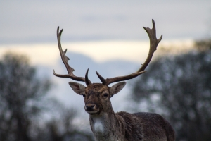

Fallow Deer
Chestnut coat with white mottles, it is most pronounced in summer with a much darker, unspotted coat in the winter.
- Scientific name: Dama Dama
- Mass: 60-150kg
- Lifespan: 12-16 years
- Trophic level: Herbivorous
Only bucks have antlers, which are broad and shovel-shaped (palmate) from three years. In the first two years, the antler is a single spike. They are grazing animals; their preferred habitat is mixed woodland and open grassland. During the rut, bucks spread out and females move between them; at this time of year, fallow deer are relatively ungrouped compared to the rest of the year, when they try to stay together in groups of up to 150.